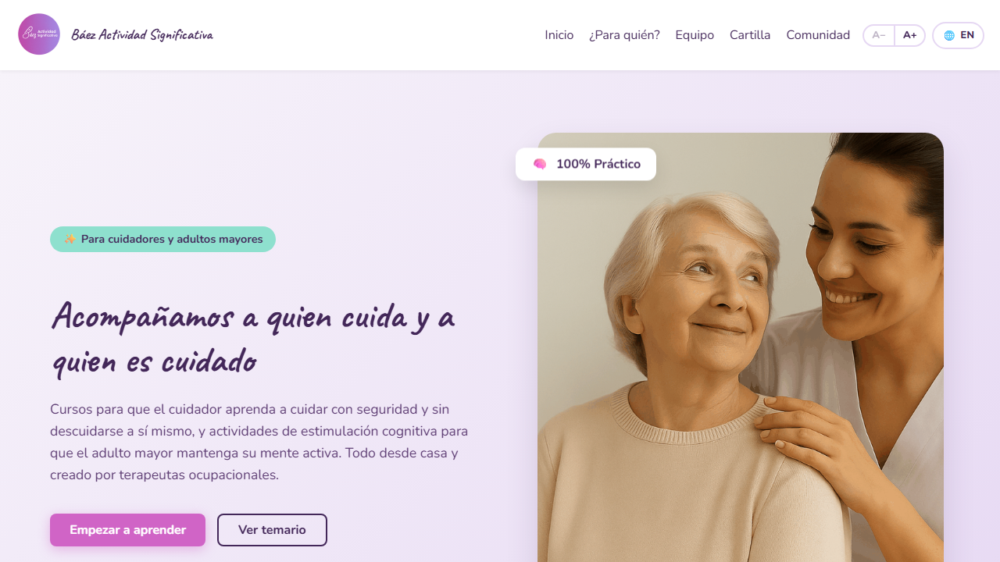

Báez Actividad Significativa
Plataforma web real para una terapeuta ocupacional, con dos caminos: cursos en diapositivas para cuidadores y actividades de estimulación cognitiva para adultos mayores. Incluye registro e inicio de sesión, perfiles, panel de administración, buscador de canciones y páginas legales. Logro: Construí el sitio completo sin frameworks, integré Firebase (Authentication, Firestore y Storage) con reglas de seguridad propias y un Cloudflare Worker que conecta con la API de Spotify sin exponer las claves.